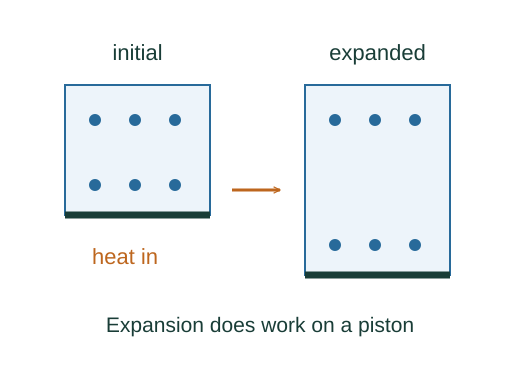
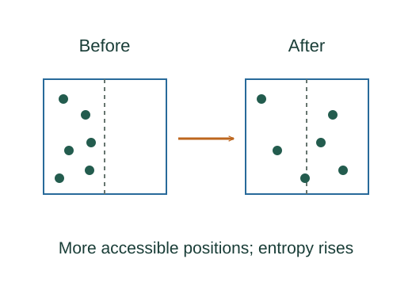

The first law and work by an expanding gas
The first law is energy conservation for a thermodynamic system. Heat and work describe transfers across its boundary; internal energy describes a property of the state.
What the symbols mean
Q: heat transferred into the system; Wby: work done by it on the surroundings; Eint: internal energy; pext: boundary opposing pressure.
When this applies
A closed system with negligible changes in bulk kinetic and gravitational potential energy. For the simple integral use pressure–volume boundary work; additional kinds of work require additional terms.

Choose signs before calculating
Energy entering as heat raises the system energy. Work delivered outward removes energy. This fixes the sign convention, rather than being a separate formula to memorize.
Find a piston’s small work
An outward displacement dx moves a piston of area A through volume change dV = A dx. Work delivered against the exterior pressure is force times displacement.
Accumulate along the actual path
Integrate boundary pressure over the volume change. In a quasistatic mechanically balanced process pext is approximately the gas pressure. For free expansion pext = 0 even though the gas expands.
Go deeper at this stepWhy does work depend on the path?Why an integral accumulates a rateDistinguish a state change from transfers
Internal-energy change depends only on endpoints. Heat and work generally depend on the process, so their infinitesimals are written δQ and δW rather than exact differentials.
Derive the special-process limits
At constant volume the boundary work vanishes, so ΔU = Q. In a complete cycle ΔU = 0, so Q = Wby. For an insulated free expansion, Q = 0 and external pressure is zero, hence Wby = 0 and ΔU = 0. For a fixed amount of ideal gas with positive heat capacity, ΔU = 0 implies unchanged temperature, so its endpoint pV product is unchanged.

Where each equation comes from
Derived equations link to an argument below. Definitions, physical postulates and constitutive models are identified as the inputs of that argument.
Derivation of the main resultDerived result
Conditions: A closed system with negligible changes in bulk kinetic and gravitational potential energy. For the simple integral use pressure–volume boundary work; additional kinds of work require additional terms.
- Choose signs before calculating. Energy entering as heat raises the system energy. Work delivered outward removes energy. This fixes the sign convention, rather than being a separate formula to memorize. Explain the equation used in step 1 ↗
- Find a piston’s small work. An outward displacement dx moves a piston of area A through volume change dV = A dx. Work delivered against the exterior pressure is force times displacement. Explain the equation used in step 2 ↗
- Accumulate along the actual path. Integrate boundary pressure over the volume change. In a quasistatic mechanically balanced process pext is approximately the gas pressure. For free expansion pext = 0 even though the gas expands. Explain the equation used in step 3 ↗ Why does work depend on the path? ↗
- Distinguish a state change from transfers. Internal-energy change depends only on endpoints. Heat and work generally depend on the process, so their infinitesimals are written δQ and δW rather than exact differentials. Explain the equation used in step 4 ↗
- Derive the special-process limits. At constant volume the boundary work vanishes, so ΔU = Q. In a complete cycle ΔU = 0, so Q = Wby. For an insulated free expansion, Q = 0 and external pressure is zero, hence Wby = 0 and ΔU = 0. For a fixed amount of ideal gas with positive heat capacity, ΔU = 0 implies unchanged temperature, so its endpoint pV product is unchanged. Explain the equation used in step 5 ↗ Why does ideal-gas internal energy depend only on temperature? ↗
Equation in step 1Fundamental law / postulate
Fundamental law / postulate. This relation is an explicit input at this level of the model, rather than a result proved by the equations that use it.
Energy entering as heat raises the system energy. Work delivered outward removes energy. This fixes the sign convention, rather than being a separate formula to memorize.
Scope: A closed system with negligible changes in bulk kinetic and gravitational potential energy. For the simple integral use pressure–volume boundary work; additional kinds of work require additional terms.
Equation in step 2Derived result
What is being shown: Find a piston’s small work
An outward displacement dx moves a piston of area A through volume change dV = A dx. Work delivered against the exterior pressure is force times displacement.
Earlier results used in this argument:
- ΔEint = Q − Wby (Fundamental law / postulate)
Equation in step 3Derived result
What is being shown: Accumulate along the actual path
Integrate boundary pressure over the volume change. In a quasistatic mechanically balanced process pext is approximately the gas pressure. For free expansion pext = 0 even though the gas expands.
Earlier results used in this argument:
- ΔEint = Q − Wby (Fundamental law / postulate)
- δWby = (pextA)dx = pext dV (Derived result)
Equation in step 4Derived result
What is being shown: Distinguish a state change from transfers
Internal-energy change depends only on endpoints. Heat and work generally depend on the process, so their infinitesimals are written δQ and δW rather than exact differentials.
Earlier results used in this argument:
- ΔEint = Q − Wby (Fundamental law / postulate)
- δWby = (pextA)dx = pext dV (Derived result)
- Wby = ∫ᵥᵢᵛᶠ pext dV (Derived result)
Equation in step 5Derived result
What is being shown: Derive the special-process limits
At constant volume the boundary work vanishes, so ΔU = Q. In a complete cycle ΔU = 0, so Q = Wby. For an insulated free expansion, Q = 0 and external pressure is zero, hence Wby = 0 and ΔU = 0. For a fixed amount of ideal gas with positive heat capacity, ΔU = 0 implies unchanged temperature, so its endpoint pV product is unchanged.
Earlier results used in this argument:
- ΔEint = Q − Wby (Fundamental law / postulate)
- δWby = (pextA)dx = pext dV (Derived result)
- Wby = ∫ᵥᵢᵛᶠ pext dV (Derived result)
- dEint = δQ − δWby (Derived result)
Why does ideal-gas internal energy depend only on temperature? ↗
A worked example
If a gas absorbs 500 J of heat and does 200 J of work on a piston, its internal energy increases by 300 J.
Derivation behind this calculation ↗A point to keep straight
An isothermal ideal gas has ΔEint = 0 but can have nonzero heat and work. Adiabatic means Q = 0, not constant temperature.
Check the assumptions and derivation ↗